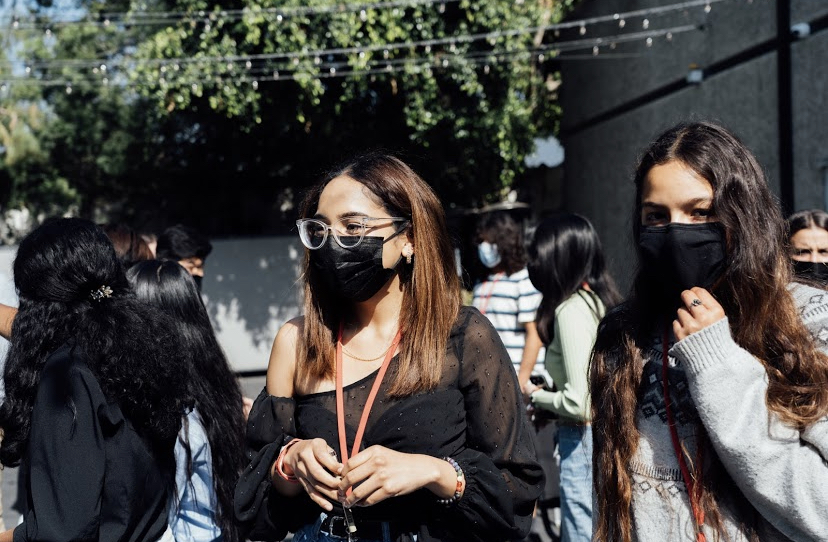
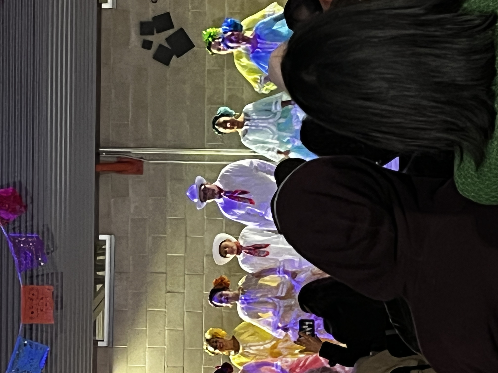
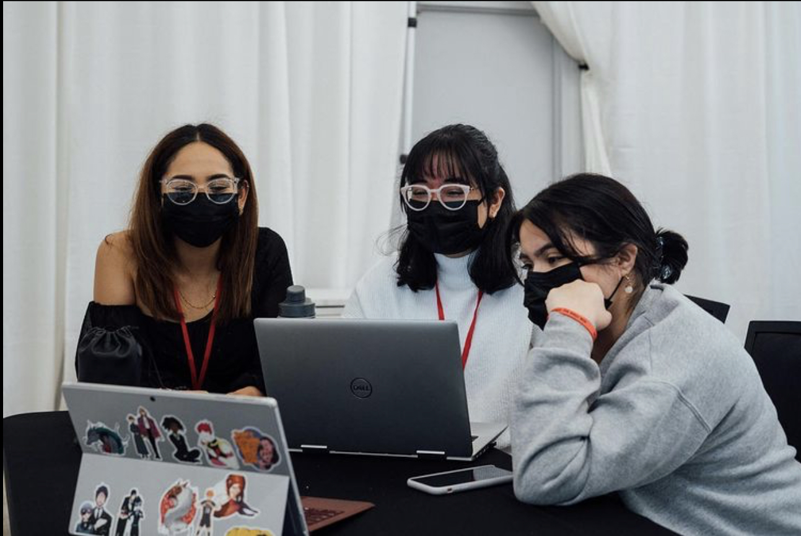
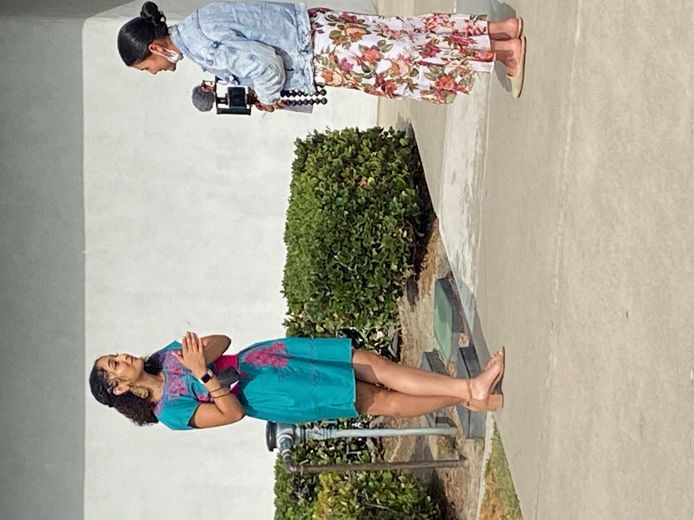
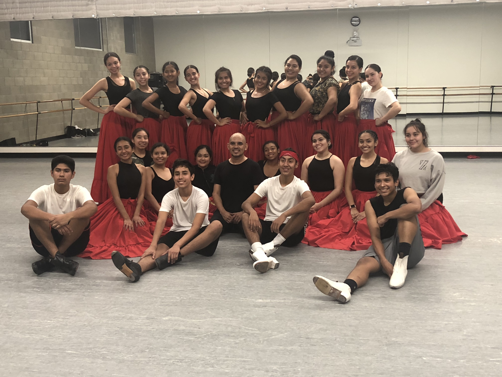
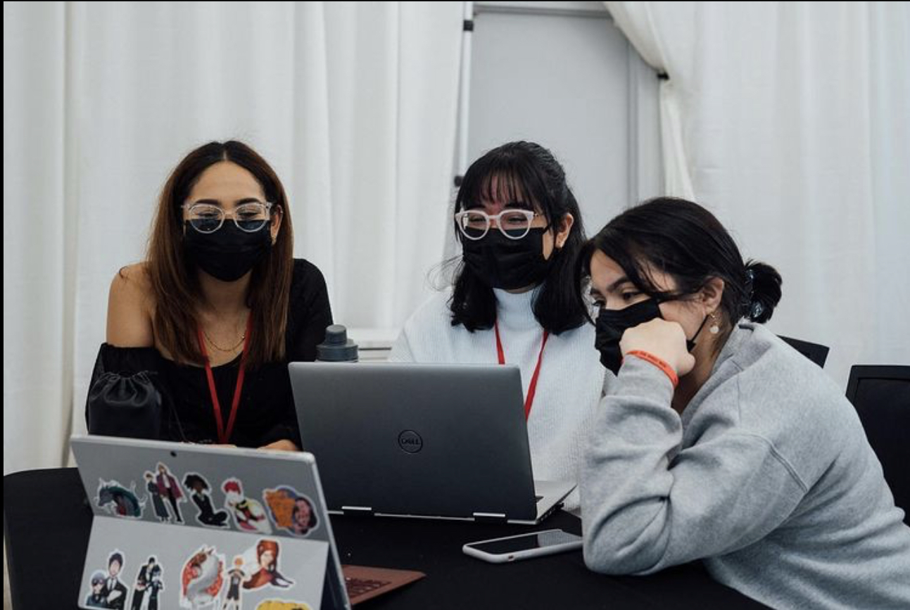
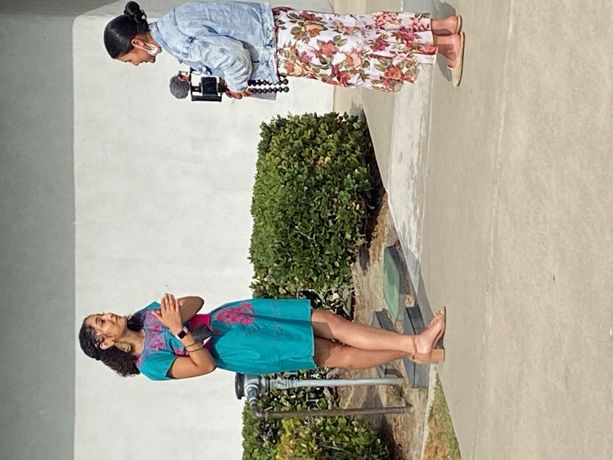
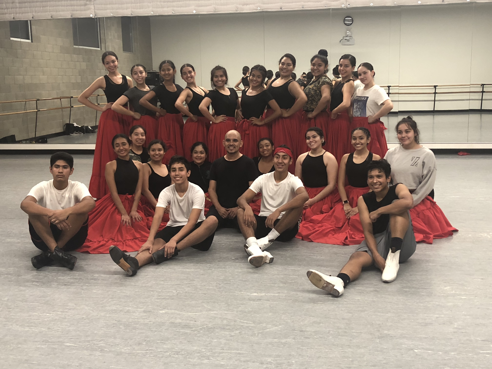

Samy Perez
Hello! My name is Samantha Perez, but I prefer to be called Samy. I go by she/her pronouns. I am currently a freshman student at the University of California - Riverside under the Pre-Business major. In the near future I hope to apply to business administration with a concentration in marketing. I have a great interest in discovering how to market to my target audience and getting to know more about the trends along with the market for different businesses. Alongside my studies, my hobbies include reading, dancing, and drawing. Among my friends and colleagues, I am considered to be creative, hard-working, and enthusiastic. My personality type is ENFJ-A.
Earlier this year, I was also a part of the Dragon Kim Foundation 2021 Cohort. Along with founding my own community service organization, I was able to attain great leadership and organizational skills. Such as business strategies, management, budgeting, and networking. My organization specifically targeted to teach the low-income community about the importance of cultural appreciation and community. To learn more you can check out the Instagram page, @SembrandoDahlias, or email at sembrandodahlias.com. Furthermore, currently, I am a part of a Ballet Folklorico dance company named “Relampago del Cielo”. I have been dancing with them for a little over a year, but overall I have been in the Folklorico industry for about 12 years. I have attended many dance conferences and events. Such as Danzantes Unidos and ANGF. Both in which I was taught by teachers from all over Mexico in specific regions. Additionally, in my career as a Ballet Folklorico dancer, I learned a number of life skills, which included: Problem-solving skills, Teamwork mentality, perseverance, dedication, and self-discipline.
Dance, business, and marketing have all been major factors in my current career. I love being able to learn so much more about each of these industries through my choices. I believe that each experience that I have had until now has helped build my character and skills. Overall, as a worker, I will be able to dedicate myself to my tasks and be able to communicate effectively and enthusiastically with my team members. As well as, I hope that I will be able to continue down a path that would allow me to build a career that has a good balance between both marketing and dance.
Experience
Fellow
• Recieved Leadership training
• Recieved mentor guidance from Daniela Martinez (supply chain professional)
• Ran my own community organization over the summer of 2021
Ballet Folklorico Teacher
• Coordinated weekly Ballet Folklorico (Mexican Folk-Dance) workshops
• Was able to promote diversity within my community by cultivating cultural pride to those who are of Mexican descent and cultural awareness to those who come from all backgrounds
Orientation Leader
• Coordinate group sessions for incoming students
• Help expand my knowledge about the school and organizations
• Recieved leadership assistance
• Learned a number of life skills including problem solving, teamwork mentality and perserverance
Education
UC Riverside
Portfolio






 
